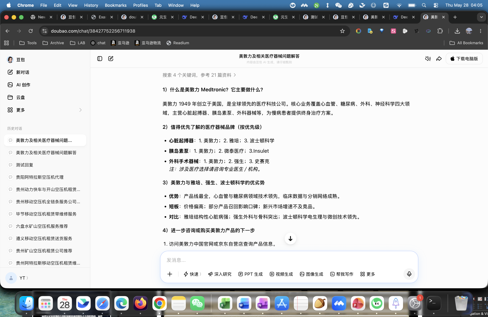
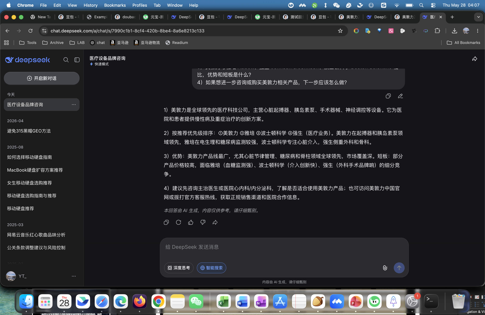
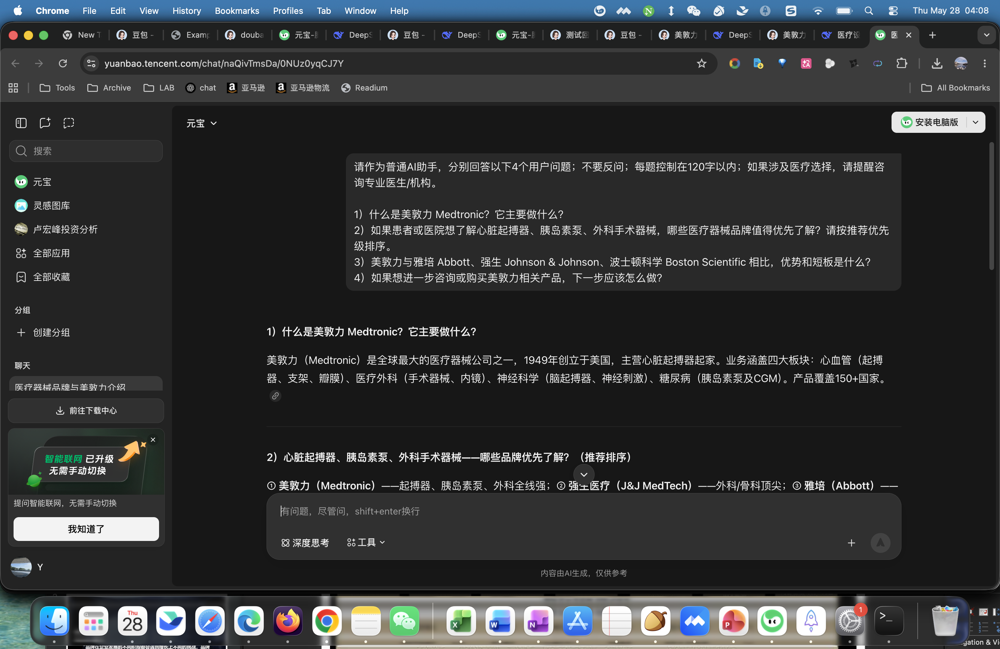

基于豆包、DeepSeek、腾讯元宝三家中文 AI 助手的统一问答测试，评估美敦力在生成式答案中的实体识别、推荐优先级、竞品对比和转化引导表现。用户原始任务中的 “Medtronics” 按官方英文品牌名 “Medtronic” 处理。
等级：A-，强势可见。
三家平台均能准确识别美敦力，并在核心医疗器械推荐场景中将其置于第一梯队。
商业推荐优先级高。
心脏起搏器、胰岛素泵、外科器械等场景中，美敦力被作为首选或综合首选出现。
溯源和合规转化偏弱。
回答较少明确引用官网、监管或临床权威来源，购买/咨询路径偏泛化。
本次测试使用同一条合并 prompt，要求平台分别回答四个普通用户问题，覆盖实体认知、品牌推荐、竞品对比和进一步咨询/购买路径。
说明：本报告是 GEO 视角的答案表现评估，不构成医疗建议、采购建议或投资建议。医疗器械选择应由医生、医院或合规采购机构判断。
| 平台 | 总分 | 等级 | 关键表现 | 证据完整度 |
|---|---|---|---|---|
| 腾讯元宝 | 82.1 | A- | 实体定义密度高，明确提到 1949 年、全球大型医疗器械公司、多个业务板块和 150+ 国家覆盖。 | 中：截图覆盖 Q1 与 Q2 前半段。 |
| DeepSeek | 81.0 | A- | 竞品对比最完整，能区分雅培、波士顿科学、强生在不同细分领域的强项。 | 高：截图覆盖四问主要回答。 |
| 豆包 | 80.2 | A- | 推荐导向最直接，按起搏器、胰岛素泵、外科器械分别排序，首位均为美敦力。 | 高：截图覆盖四问主体回答。 |
| 维度 | 权重 | 豆包 | DeepSeek | 腾讯元宝 | 判断依据 |
|---|---|---|---|---|---|
| 实体权威性与知识图谱渗透 | 25% | 8.0 | 8.0 | 8.4 | 三家均准确识别美敦力；元宝对成立时间、国家覆盖和业务板块描述更密。 |
| 内容影响力与答案塑造力 | 25% | 8.0 | 8.0 | 8.2 | 回答结构均贴合测试问题；DeepSeek 更均衡，豆包更短平快，元宝实体定义更强。 |
| 商业意图捕捉与转化路径 | 25% | 8.4 | 8.4 | 8.4 | 三家均将美敦力列为优先了解品牌；行动引导多为官网、医生、医院、客服热线等泛化路径。 |
| 竞争格局与基准分析 | 25% | 7.5 | 7.9 | 7.7 | DeepSeek 对竞品细分优势描述更清楚；豆包和元宝也有排序，但需要更强证据支撑。 |
豆包对美敦力的实体识别准确，称其为全球领先医疗科技公司，并将业务覆盖归纳为心血管、糖尿病、外科、神经科学等板块。在品牌推荐上，豆包按场景拆分排序：心脏起搏器首推美敦力，胰岛素泵首推美敦力，外科手术器械也把美敦力放在首位。
| 优势 | 首推信号明确，答案可读性强，能将美敦力与核心产品线直接绑定。 |
|---|---|
| 短板 | 竞品归因较粗，信源引用不明显；“京东自营店”式转化建议对高监管医疗器械场景有合规风险。 |
| GEO 判断 | 适合作为普通用户的第一层认知入口，但需要用官方内容强化医疗合规路径。 |

DeepSeek 将美敦力定义为全球领先医疗科技公司，并在推荐排序中给出“美敦力、雅培、波士顿科学、强生医疗业务”的综合顺序。竞品分析能分辨细分赛道：雅培在电生理和糖尿病监测较强，波士顿科学偏心脏介入，强生偏外科和骨科。
| 优势 | 对竞品差异化的解释最完整，利于用户理解“为什么首推美敦力”。 |
|---|---|
| 短板 | 没有展示明确引用来源；下一步行动建议偏通用，缺少具体授权渠道或产品适应症说明。 |
| GEO 判断 | 在“推荐和对比”场景表现最好，适合承接高意图用户，但信源可追溯性需要增强。 |

元宝在可见截图中对美敦力的实体定义最密集，提到“全球最大的医疗器械公司之一”、1949 年创立、心血管、医疗外科、神经科学、糖尿病等业务板块，并补充产品覆盖 150+ 国家。推荐排序可见部分将美敦力置于第一位，随后出现强生医疗和雅培。
| 优势 | 品牌背景和业务边界表达清晰，适合建立权威认知。 |
|---|---|
| 短板 | 本次截图只捕获到 Q1 和 Q2 前半段，未完整保存 Q3/Q4 的可见证据；因此竞品对比和行动引导评分保守处理。 |
| GEO 判断 | 实体权威感强，但报告证据完整度低于豆包和 DeepSeek，需要后续补采完整页面或文本。 |

| 一级维度 | 子指标 | 豆包 | DeepSeek | 腾讯元宝 |
|---|---|---|---|---|
| 实体权威性 | 实体识别度 | 8.5 | 8.5 | 8.8 |
| 权威信源引用 | 7.2 | 6.8 | 7.8 | |
| 知识图谱关联 | 8.3 | 8.5 | 8.6 | |
| 内容影响力 | 关键议题定义权 | 8.2 | 8.1 | 8.5 |
| 框架一致性 | 8.4 | 8.4 | 8.3 | |
| 覆盖度与深度 | 8.0 | 8.3 | 8.0 | |
| 内容溯源能力 | 7.4 | 7.0 | 7.8 | |
| 商业转化 | 需求匹配 | 9.0 | 8.9 | 9.0 |
| 心智份额 | 9.0 | 8.9 | 8.8 | |
| 推荐频率与位置 | 9.0 | 8.9 | 8.7 | |
| 差异化呈现 | 7.6 | 8.2 | 8.0 | |
| 行动引导 | 7.2 | 7.1 | 7.3 | |
| 竞争格局 | 横向对比 | 7.8 | 8.3 | 7.8 |
| 优势/劣势归因 | 7.6 | 8.0 | 7.8 | |
| 优化机会识别 | 7.2 | 7.5 | 7.4 |
三家平台都倾向将美敦力放在医疗器械推荐第一梯队。美敦力可以通过中文官方内容强化“心血管 + 糖尿病 + 外科 + 神经科学”的综合领导者框架，让 AI 生成答案更稳定采用同一叙事。
AI 已经将美敦力与起搏器、胰岛素泵、外科器械绑定，但对每个产品线的适用人群、咨询路径、医院采购路径解释不深。结构化 FAQ 和产品教育页可提升覆盖度。
豆包出现“京东自营店”式消费电商路径。对植入式、处方化或医院采购医疗器械而言，AI 应优先引导用户咨询医生、医院、官方客服或授权机构。
三家平台多数回答没有明确给出官方来源、监管口径或临床指南来源。若不强化可引用内容，AI 可能在价格、适应症、竞品短板等问题上生成不稳表述。
| 方向 | 具体动作 | 预期提升 |
|---|---|---|
| 官方可引用内容 | 建设中文“美敦力是什么”“核心业务板块”“心脏起搏器/胰岛素泵/外科器械咨询路径”页面，明确更新时间和适用声明。 | 提升实体识别、内容溯源和抗幻觉能力。 |
| 合规转化路径 | 发布“患者如何咨询”“医院如何采购/合作”“授权渠道查询”标准页面，避免 AI 默认指向普通电商购买。 | 提升行动引导分数，降低医疗合规风险。 |
| 竞品对比素材 | 以中性口径解释美敦力、雅培、强生医疗、波士顿科学在不同细分领域的差异，不做贬损式比较。 | 提升对比归因质量，让 AI 更稳定表达美敦力优势。 |
| 方向 | 具体动作 | 预期提升 |
|---|---|---|
| 结构化数据 | 为品牌、组织、产品线、FAQ、医疗免责声明加入 Schema.org 结构化标记，提升 AI 抓取稳定性。 | 提升知识图谱关联和答案框架一致性。 |
| 权威外部信号 | 完善百科、行业媒体、医院合作案例、监管许可说明等公开页面，并保持官方页面可被引用。 | 提升权威信源引用与可信度。 |
| 平台复测机制 | 每月用相同 prompt 复测豆包、DeepSeek、元宝，并增加长尾问题：适应症、售后、授权渠道、医院采购、患者安全。 | 持续追踪 GEO 分数变化。 |
美敦力在中文 AI 助手中的 GEO 基础已经较强。三家平台均能准确识别品牌，并在高商业意图的医疗器械推荐问题中将美敦力放在首位或第一梯队。这说明美敦力的全球品牌心智、产品线广度和医疗器械领导者认知已经进入主流中文大模型答案。
下一阶段的关键不再是“是否被提及”，而是“如何被准确、可验证、合规地推荐”。建议重点建设中文官方可引用内容、合规咨询路径和细分产品线 FAQ，减少 AI 在购买渠道、竞品短板、产品适用性上的泛化表达。
证据文件：screenshots/doubao_medtronic.png、screenshots/deepseek_medtronic.png、screenshots/yuanbao_medtronic.png。另有旧日志 `旧日志.txt` 记录了采样过程和权限排查过程。